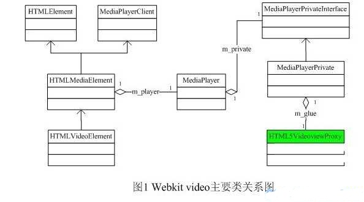
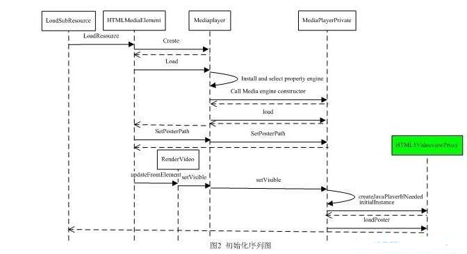
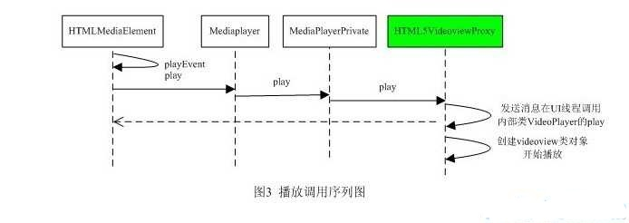

Android webkit HTML5 video研究
摘要：本文主要介绍HTML5 video在android2。2中实现的主要架构和程序流程。
一、实现HTML5 video主要的类
1、主要类结构及介绍

（1） HTMLElement类不是最上层类，其父类可追到为Node类。为了表述方便省去了上面的类继承结构。该类是一个通用基类，大部分HTML元素都需要继承该类。
（2） MediaPlayerClient类是一个接口类，HTMLMediaElement以私有方式继承了部分函数，主要作用是媒体播放状态改变时通过MediaPlyer在MediaPlayerPrivate中调用。
（3） HTMLMediaElement类完成了video元素大部分行为和属性的定义。包括audio元素也是继承该类。
（4）HTMLVideoElement类实现了很少的功能，在android中没有涉及该类。
（5）MediaPlayer连接播放功能类和媒体元素类的交互类。在HTMLMediaElement中定义了该类的成员指针变量m_player，在完成播放等功能时将会调用该类
。
另外在该类定义了一个Media引擎容器，用来保存所有注册的可提供播放支持的类，比如MediaPlayerPrivate。在需要时会根据媒体资源的需要选择最好的支持类。
（6） MediaPlayerPrivateInterFace是一个纯虚函数类，定义了主要和播放相关的函数。在MediaPlayer中定义了该类的成员智能指针变量m_private。
（7）MediaPlayerPrivate该类继承了MediaPlayerPrivateInterface类。该类主要用于和HTML5VideoviewProxy类交互。定义了一个HTML5VideoviewProxy类的代理结构成员变量m_glue，用来保存HTML5VideoviewProxy类的实例和方法。
（8） HTML5VideoviewProxy提供具体的播放。该类通过调用系统系统videoview。java类来实现播放。定义了两个静态内部类，一个用来完成具体播放调用。另一个用来完成video poster的下载。另外该类会调用webview。java的chromeclient类成员来实现videoview的显示和隐藏，默认poster的资源获取，progress view的获取。所以要支持HTML5 video，上层webview应用必须重载chromeclient类的相关函数。
2、主要类架构和功能分析
从上面简要分析可以看出主要类分了三类：
一类是video元素类（HTMLElement， HTMLMediaElement，HTMLVideoElement）
第二类是架构类和接口（MediaPlayerClient，MediaPlayer，MediaPlayerPrivateInterface）；
第三类是具体实现播放功能的类（MediaPlayerPrivate， HTML5VideoviewProxy ）。该部分是我可以移植的，可以添加自己的播放类。
既然可以实现动态添加功能模块，那么需要遵守什么。通过源码可以看出播放类需要实现：提供静态注册函数，用来注册自己；对象创建函数（调用构造函数的函数）；支持的数据类型函数；支持的类型和解码器名字函数。这样MediaPlay在创建播放类时会根据支持情况选择。
另外，播放类还必须实现MediaPlayerPrivateInterface中定义的函数，这样MediaPlay才能通过接口调用具体播放功能；在播放类中也可以调用MediaPlay中的关于播放状态变化等函数，然后MediaPlay通过MediaPlayerClient接口类调用HTMLMediaElement中具体的实现。将播放状态返回给媒体元素。
二，视频元素处理流程
在程序完成下面两个流程后，就可以播放一个视频资源。
1、类实例初始化流程
浏览器引擎加载完HTML文档后，开始解析里面的元素搭建DOM tree， Render tree和加载子资源。在解析video元素时，会创建HTMLVideoElement类对象和对应的RenderVideo对象（因为大部分行为是在基类HTMLMediaElement中完成，所以下图标识的是HTMLMediaElement）。对于src属性引擎会调用HTMLMediaElement的loadResource函数，如果没有该属性或source子元素，就不会有下面的流程。

图2表示了HTMLMediaElement的loadResource函数内部的主要调用流程。首先调用MediaPlay的create函数。然后调用MediaPlayer的load函数，在load函数中会注册媒体引擎，并根据content type选择最合适的engine。然后通过engine调用对应播放类的实例创建函数，然后调用播放类的load函数保存媒体资源的url，返回到MediaElement。接着判断是poater url是否存在，若存在保存到播放类。接下来媒体元素会调用RenderVideo的updateElement函数。在updateElement函数中调用updatePlayer并调用到MediaPlay的setvisible函数，然后调到播放类的setvisible并创建java播放类和设置video poster。Rendervideo是怎么调用到MediaPlay的函数呢。因为在Element对象和Render对象中都保存对方的指针，在MediaElement中又保存了MediaPlyer指针。引擎在创建Element后，便会调用element的attach函数创建对应的Render对象。
2、播放调用序列
在js中调用video。play（）方法时，程序会调用到HTMLMediaElement的play函数。最终会调用到HTML5VideoviewProxy的play函数。

三、总结：
对于媒体资源的回放，解码是最大的难题。既然想通过浏览器来直接支持视频播放，那么也必须考虑这个问题。所以在源码中有Media engine vector的设计，用来根据contentType选择最佳media engine。在目前android2。2源码中只有Mediaplayerprivate一个media engine。而该播放类，最终也是调用了系统java接口videoview。并传给了媒体资源的url。对于解码的支持完全取决于终端系统。
Android对video元素支持很有限。比如video的controls、autoplay、preload等都没支持。对于autobuffer的值虽然有设置，但是对于播放器并没有用到。对于HTML5中定义的很多规则都没有实现，所以，android对HTML5 video的支持很有限。
在android中HTML5 video有自己的特性。从上面的流程中可以看出，虽然架构设计了通过元素来控制播放和将播放状态从播放类返回给元素，但在实际播放按键响应和控制由videoview完成，js也可以控制播放（比如一开始的play调用）。 播放界面是videoview的controller提供，和引擎里面定义的RenderMediaController没有关系，可能在chrome中播放出现的控件是该类画出来的。
另外，在android中并不支持<audio>元素。